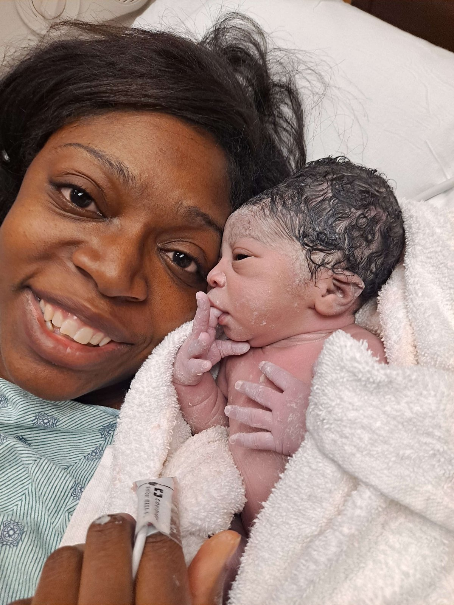

Una doula a tu lado, sin costo.
Mary’s Hands Network provides free doula services to any mom who applies. Our services are limited by the availability and location of our volunteers, but every mother who applies is cared for to the fullest extent we are able.

Del emparejamiento a las ocho semanas posparto.
Your doula team will be on call around your due date and follow up within 72 hours of delivery. After your 6–8 week visit, our team checks in at 4, 6, and 12 months.
Solicita y te incorporas
Complete the application, sign agreements, and meet with a staff doula.
Emparejamiento
Matched with two volunteer doulas within a week, introduced virtually.
Visitas antes del parto
Two in-person visits to build your birth vision, practice comfort measures, and plan.
Parto y posparto
On-call support during your birth month, a 72-hour check-in, and up to 8 weeks of follow-up.
A 5-minute walkthrough of the application.
From submitting your application to creating your Kiip client account, uploading your insurance card, signing your forms, and scheduling your onboarding visit with a staff doula. Every step, in order.
En sus propias palabras.
 Your doula at your side
Your doula at your side A family supported
A family supportedMy doula stayed with me through thirty hours of labor. She knew when to speak, when to press on my back, and when to just be there.
I did not know a doula could be free. My team showed up to my postpartum visits, helped me with breastfeeding, and checked on me when I was alone.
They helped me ask the questions I did not know how to ask. I felt heard by my doctors for the first time.
Un mapa, no un plan rígido.
A simple guide to help you explore your options, share your hopes, and start meaningful conversations with your care team. Think of it as a map for your birth journey, a tool to prepare while staying flexible when things change.
Cuando nos necesites, de día o de noche.
Every MHN client gets the Doula Hotline at her first visit. If you can’t reach your doula team, it connects you straight to MHN staff. Not a client yet? Llamar or text the same number. You never need an appointment, and you never need to apologize for calling.
Or email info@mhndoula.com and we’ll respond within 24 hours.
If your story takes a different turn, we are still here.
Loss, complications, financial hardship, food insecurity. Your journey may not be a straight line. Whatever your story is, you are not alone.
Walking alongside you through loss.
Our bereavement-trained doulas walk alongside families through miscarriage, stillbirth, medical termination, and neonatal loss. Free, confidential, no timeline for reaching out.
Food, housing, transit, and more.
Free and reduced-cost services for food, housing, transit, childcare, mental health, and legal aid. Llamar or text 2-1-1, or search FindHelp.org by ZIP code.